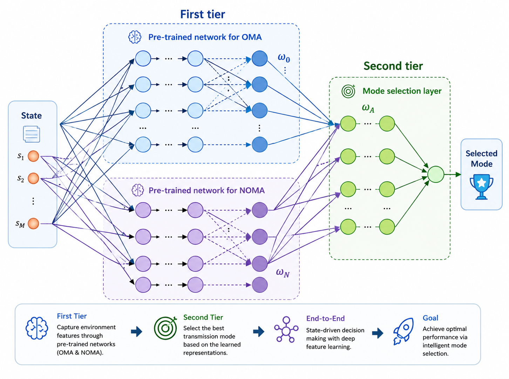
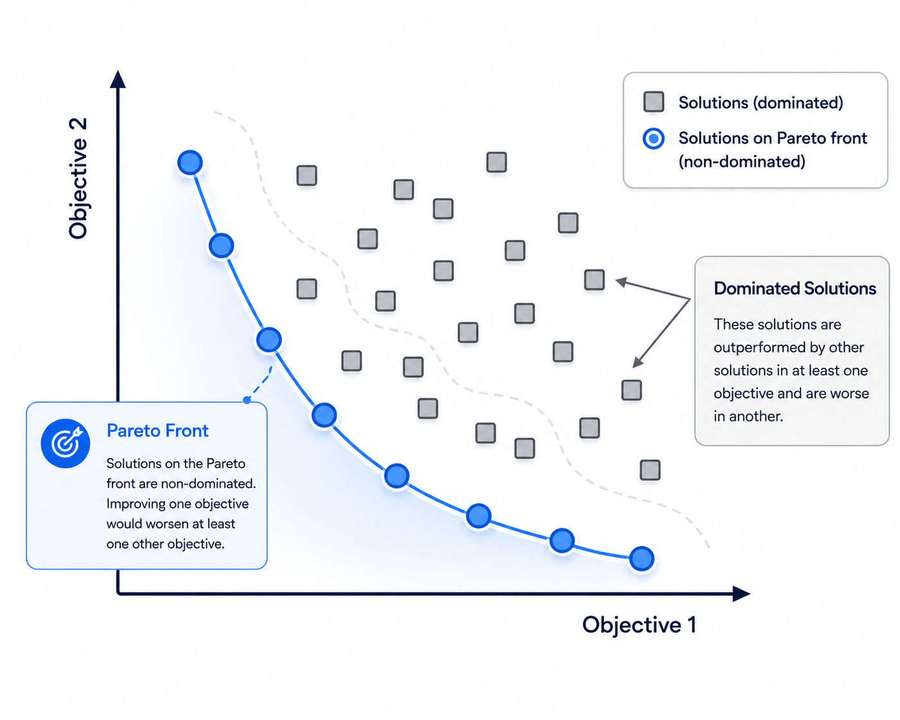
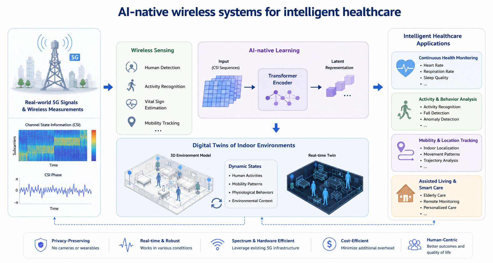

Shuang Li
Postdoctoral Research Associate, Ph.D.
Department of Electrical and Computer Engineering
University of Victoria, Victoria, BC, Canada
Postdoctoral Research Associate, Ph.D.
Department of Electrical and Computer Engineering
University of Victoria, Victoria, BC, Canada
Energy-efficient and reliable communication remains a fundamental challenge in Wireless Body Area Networks (WBANs) due to stringent energy constraints, dynamic channel conditions, and finite blocklength transmission requirements. We developed a hybrid supervised and deep reinforcement learning framework that jointly optimizes transmission decisions, power allocation, and blocklength configuration, enabling near-optimal energy-efficient communication while satisfying reliability constraints.

Wireless-powered IoT networks require intelligent scheduling strategies to maintain information freshness under energy constraints. We developed a deep transfer learning framework that jointly optimizes transmission mode selection (OMA/NOMA) and sensor scheduling, enabling adaptive Age of Information (AoI) minimization and efficient online operation in dynamic wireless environments.

Existing WBAN transmission schemes often optimize either energy efficiency or information freshness, overlooking their inherent tradeoff. We developed PG-MOPDQN, a preference-guided multi-objective reinforcement learning framework that jointly optimizes sensor scheduling and power control, enabling flexible Pareto-optimal operation under diverse user requirements.

By leveraging real-world 5G communication signals and wireless channel measurements such as Channel State Information (CSI), my current research focuses on communication-embedded sensing for intelligent healthcare applications. By combining Transformer-based learning architectures with wireless sensing data, I aim to build digital twins of indoor environments that capture human activities, mobility patterns, and physiological behaviors in real time. The long-term vision is to establish AI-native wireless systems that seamlessly integrate communication, sensing, digital twins, and intelligent inference for future smart healthcare environments.
[1] S. Li, H. Yu, and H.-C. Yang, “Session-Specific Design for Wireless Transmission over WBANs: Navigating Energy Efficiency and Reliability Tradeoff with Multi-Objective Reinforcement Learning,” IEEE Internet of Things Journal, vol. 13, no. 10, pp. 20913–20924, May 2026.
[2] S. Li, H. Hu, H.-C. Yang, K. Xiong, P. Fan, and K. B. Letaief, “AoI Minimization for WP-IoT with PDQN-Based Hybrid Offline/Online Learning: A Joint Scheduling and Transmission Design Approach,” IEEE Transactions on Cognitive Communications and Networking, vol. 12, pp. 4547–4560, Jan. 2026.
[3] S. Li, H.-C. Yang, and F. Hu, “Joint Transmission Mode Selection and Scheduling for AoI Minimization in NOMA-Capable WP-IoT Networks: A Deep Transfer Learning Solution,” IEEE Transactions on Communications, vol. 73, no. 8, pp. 5805–5816, Aug. 2025.
[4] S. Li, H.-C. Yang, F. Xu, H. Hu, and F. Hu, “Energy-Efficient Relay Transmission for WBAN: Energy Consumption Minimizing Design with Hybrid Supervised/Reinforcement Learning,” IEEE Internet of Things Journal, vol. 11, no. 10, pp. 17770–17779, May 2024.
[5] S. Li, F. Hu, Z. Xu, Z. Mao, Z. Ling, and H. Liu, “Joint Power Allocation in Classified WBANs With Wireless Information and Power Transfer,” IEEE Internet of Things Journal, vol. 8, no. 2, pp. 989–1000, Jan. 2021.
[6] S. Li, F. Hu, Z. Mao, Z. Ling, and Y. Zou, “Sum-Throughput Maximization by Power Allocation in WBAN With Relay Cooperation,” IEEE Access, vol. 7, pp. 124727–124736, Aug. 2019.